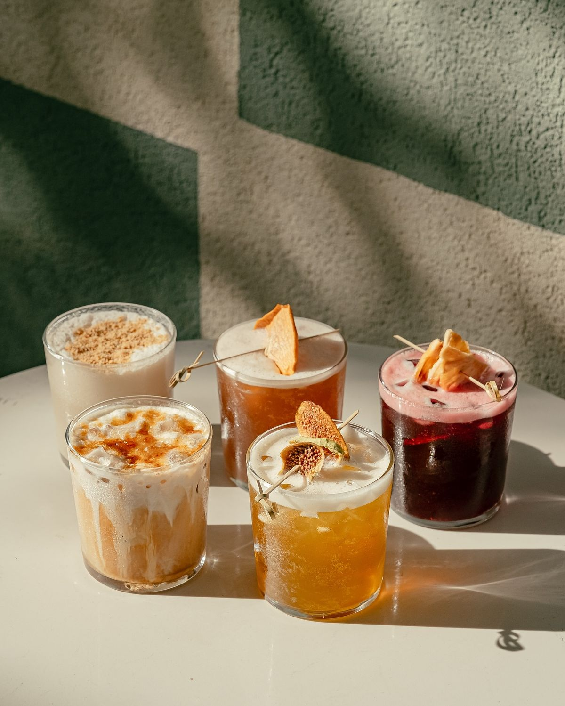
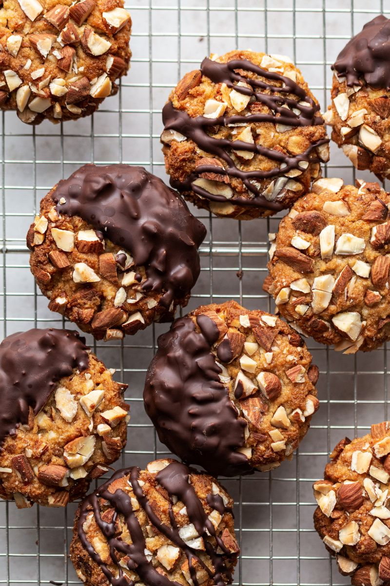

At Bean & Bloom Café, our menu reflects our commitment to quality, comfort, and sustainability. Every cup is brewed with ethically sourced beans, roasted in-house to ensure the freshest flavor. Our seasonal specialty drinks highlight unique flavors inspired by the community and the changing seasons, while our house-made baked goods are crafted daily with care. Whether you're here to study, relax, or connect with friends, our menu offers something warm, comforting, and made with intention.
Sourced Beans

We partner with small, ethical farms across the world to bring you rich, freshly roasted beans with unique flavor profiles. All beans are roasted in-house daily.
| Bean | Origin | Flavor Notes | Price / lb |
|---|---|---|---|
| Bloom House Blend | Guatemala | Chocolate, caramel, smooth | $15 |
| Sunrise Roast | Ethiopia | Citrus, floral, bright | $18 |
| Midnight Dark | Colombia | Smoky, bold, deep | $17 |
Seasonal Specialty Drinks
Our seasonal menu rotates throughout the year, inspired by local flavors and fresh ingredients.
- Winter Spice Latte – $6.50
- Lavender Honey Cold Brew – $6.00
- Caramel Apple Chai – $5.75
House-Made Baked Goods
Baked fresh every morning with organic ingredients and seasonal fruit from local growers.
- Butter Croissant – $3.50
- Blueberry Morning Muffin – $4.00
- Chocolate Chip Scone – $4.25